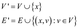
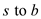
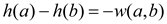

Graph is the
collection of distinct vertices and distinct
edge.
and distinct
edge.
A graph is said to be connected if every pair of vertices have the path between each of them.
• The new vertex s is added in the graph G to find the minimum path between.
• The vertex of graph represents the individual object.
• A vertex v said to be adjacent to another vertex S if the graph contain an edge
Therefore, the purpose of adding the new vertex s to V that yields V’ is to find the all pairs shortest path.
Consider a graph V. A new vertex s is added to graph V. After adding the vertex, the new set of edges is V’.
• In the graph, the vertices are represented with label and edge is represented by line between the vertices.
• A path in a graph represents a way from source to destination by traversing the edge.
The new vertex s is addition helps to find the all pairs shortest path of the graph .
Weight with Non-Negative Edge
In order to understand relationship between w and, it is necessary to understand Johnson’s algorithm. Johnson algorithm uses concept of Dijkstra’s and Bellman-Ford algorithm for finding the shortest path for all set of vertices. This algorithm works on the methods of reweighting, if the graph has negative weight cycle.
Methods of reweighting are as follows:
1. Dijkstra’s algorithm is used for finding the shortest path, if weight of all the edges in the graph is non-negative. For each vertex Fibonacci heap priority queue is used for finding the shortest path.
2. Bellman-Ford algorithm is used for finding the shortest path, if weight of any edge in the graph is negative. Calculate new non negative edges from the set of negative weights by using the weight function. For each vertex Fibonacci heap priority queue is used for finding the shortest path.
Difference between w and :
1. For all the set of vertices weight function can-be derived from the weight function w by using reweighting method. Reweighting method is applied on the graph G, if and only if graph contains negative weight cycle.
So, weight function w cannot be derived from weight function.
2. Weight function w can be positive as well as negative but is always positive.
Here, weight function is shortest path from initial vertex u to final vertex v.
Relationship between w and :
Weight function can be derived from weight function w:
d is used for representing weight of the shortest path which is calculated from weight function w. d’ is used for representing weight of the shortest path which is calculated from weight function.
After that, show the newly derived weight which is derived from negative weight cycles is non-negative. According to the lemma,
A weighted directed graph G (V, E) is given such that
w:E?R and
h:V?RFor every edge which is connected between vertex u and vertex v define new weight function such as:
1. Assume that p is any shortest path from the vertex v0 to the vertex vk where weight function is w if and only if p is also the shortest path where weight function is .
2.  if only
if only
3. Assume that a graph G contains a negative weight cycle from weight function w only when the G also contains negative weight cycle from weight function
Proving the first condition of the Lemma:
Show that, a path p from the vertex  to vertex
has
to vertex
has
… … (1)
Now,
Proving the third condition of the Lemma:
Assume a cycle c which contains set of vertices from
initial vertex to final
vertex , where the
last vertex is equal to
the first vertex .
Now, weight function is as shown:
… … (2)
It is known that
So, from equation (2),
Hence, all the conditions of the Lemma have been proved.
Weight function is always positive:
Assume a directed weighted graph G = (V, E) such
that weight function w: E R.
R.
Now, create a new graph G`= (V’, E’), where a new vertex x which does not belong to previous set of vertices V.
Now new set of vertices V’ and edges E’ are denoted as:

Forfor all vertices v which are belonging to the previous set of vertices V, extend weight function.
From the third condition which had been proved earlier that G’ contains no cycle of negative weight, but the condition is that G should also not contain negative weight cycle.
Now assume that the Graph G and G’ contains no cycle of negative weight
By using property of triangle inequality (sum of any two side of the triangle is greater than or equals to the third side)
… … (3)
By using the using equation (3) prove is always greater than or equal to the final vertex.
Thus, is always greater than or equal to the h(v). So, the weight function is always comes to be positive.
Hence, it is proved that is always positive.
A weighted directed graph G(V, E) is given such that W:E?R and h:V?RFor every edge which is connected between vertex u and vertex v define new weight function.
Johnson’s algorithm uses steps as:
1. Add a new node a to the graph, each of the node in the graph is connected to the edges of weight zero.
2. In the second step, use the bellman-ford algorithm which determines the minimum weight along the path from the new vertex a to v. If during the process if negative weight cycle is found, then the algorithm is terminated.
3. Then in the next step the reweighting is done for the edge from u to v having length (original) and the new length is (after reweighting).
4. Finally the added node a is removed from the graph and the Dijkstra’s algorithm is used to find the shortest path.Illustration to prove that is always positive:
Consider the following graph G:
In the below graph, one new vertex, which is of orange color, is added into the above Graph G.
Next, assign the weight 0 to all the vertices which are connected with the new (source) vertex.
By using the Bellman-Ford algorithm, weights of vertices is calculated.
New non-negative weights of all the edges are calculated by using the weight function:
By using the reweighting technique, weights of edges can be calculated.
Thus from the above example, it is clear that weight function always contain positive value.
Using Johnson’s algorithm, weights of a directed and weighted graph can be rewritten without changing the shortest paths.
The flaw in the Professor Greenstreet claims:
Professor Greenstreet claims doesn’t guarantee that the shortest paths remain same, even after the graph is rewritten.
Counter example to Professor Greenstreet claims:
Consider the following graph with 4 edges and add minimum weight (-10) to every weight to re calculate .

The shortest path from is with weight 4 in the original graph.
After rewriting the graph using Professor Greenstreet’s claim, the shortest path from s to b, is changed. That is, with weight 15.
Therefore, Professor Greenstreet’s claim changes shortest paths.
Consider a 0-weight cycle a-b-c in a directed graph G. That is, Now, add a new vertex s to the graph G such that there is an edge between s to every vertex in the graph G. Then, compute the new weights for each edge in the graph.
Particularly,
Since the a-b-c is a 0-weight cycle, 
Hence,
Similarly,

Therefore, if any graph G has a 0-wieghted cycle, then the new weights of every edge in the cycle is 0.
Example:
Observe that the cycle 1-3-4, where w(1,3) + w(3,4)+w(4,1) = 0
Add the new vertex s and compute the new weights.

After rewriting the graph, the new weights are as follows:
Observe that,